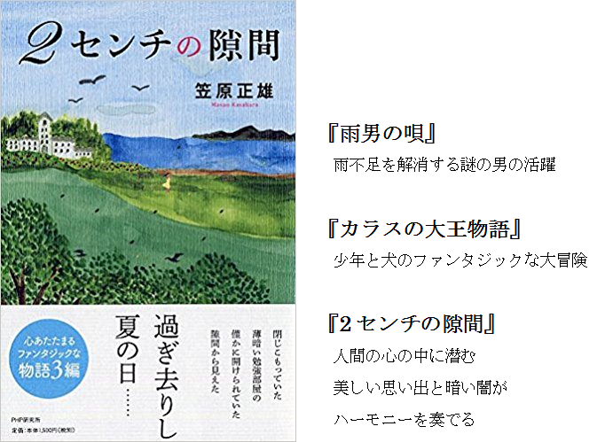

Counter:
|
若かりし頃の日記：私は工学者よりも小説家を目指していた！！[1964年1月4日]をアップしました。(2018年1月22日)
|
|
全く発言機会が与えられていない赤ちゃんにかわって、 10数年前の上記『赤ちゃんの人権宣言』当時と比べて、事態はさらに悪くなっているのではないでしょうか。 国はどうかこの事態を前向きにとらえてくださって一刻も早く対策を考えていただきたいと思います。 といぶかる方は『赤ちゃんの人権宣言』をお読み下さい。 少し長いです……。しかし読まれた方は必ず納得してくださると思います。 もしそう感じられましたら、まわりの方にぜひ一読をおすすめ下さい。水面の輪がひろがるように皆さんの声がひろがり、やがて国を動かす力になることを確信します。 |
|
一人で子育てに励むお母さんたちを支援するために、そして赤ちゃんの人権を守るために、国は真に中身のある支援、（単に現金を一律に支給するといった形ではない）きめ細かい支援を早急に取り組んでいただくことを衷心よりお願いします。 |
|
小説『雨男の唄』『カラスの大王物語』『2センチの隙間』を本として出版しました。お近くの書店にてお申し込み下さい。Amazonで購入することもできます。  (2018年3月23日) |
情報技術の人間学 -情報倫理へのプロローグ-
著者入魂の1冊！
本の画像クリック →→ アマゾンの売り場
情報倫理の本質
技術倫理の本質が具体的によく分かる。